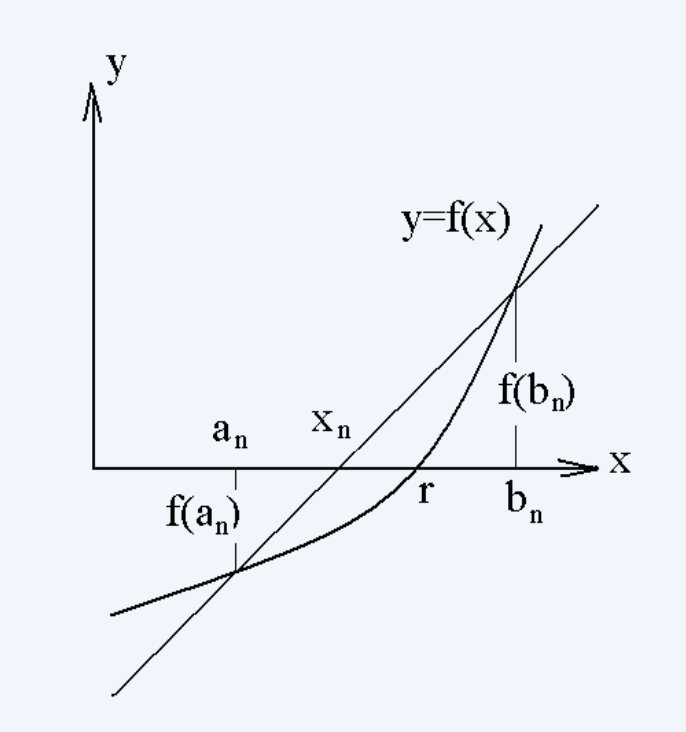

Be able to state the Intermediate Value Theorem and use it to prove the existence of a solution to \(f(x)=0\) in an interval \((a,b)\).
Be able to apply the Bisection (Interval Halving) Method to approximate a solution to \(f(x)=0\).
Be able to use different stopping procedures to exit the Bisection Method algorithm, as described in the notes.
State the Intermediate Value Theorem. What are the assumptions? What are the conclusions?
Sketch the graph of a function which satisfies the assumptions of the intermediate value theorem on the interval \([a,b]\) and which has:
Exactly one solution to \(f(x)=0\) in the interval \((a,b)\).
Exactly two solutions to \(f(x)=0\) in the interval \((a,b)\).
Exactly three solutions to \(f(x)=0\) in the interval \((a,b)\).
By appealing to the Intermediate Value Theorem, justify the existence of a solution to \(x^5-7x+3=0\) in the interval \((1,2)\).
Use the Bisection Method to estimate a solution to \(x^3+7x-5=0\) in the interval \((0,8)\) using the stopping procedures listed below. In each case, what is an estimate of the desired solution? How many iterations do you have to perform?
Use the stopping algorithm described in Algorithm 1.1.1 of the notes with \(\epsilon=0.1\).
Again let \(\epsilon=0.1\). Use the stopping algorithm: “If \(|f(m_k)|<\epsilon\), stop. Else, perform another iteration."
Again let \(\epsilon=0.1\). Use the stopping algorithm: “If \(|m_k-m_{k-1}|<\epsilon\), stop. Else, perform another iteration."
Estimate \(\sqrt{3}\) using the bisection method. Initialize your search with \([a,b]=[0,2]\) and use the stopping procedures listed below. In each case, what is the estimated value of \(\sqrt{3}\) and how many iterations were required? (Hint: find the positive value of \(x\) such that \(x^2=3\).)
Use the stopping algorithm described in Algorithm 1.1.1 of the notes with \(\epsilon=0.1\).
Again let \(\epsilon=0.1\). Use the stopping algorithm: “If \(|f(m_k)|<\epsilon\), stop. Else, perform another iteration."
Again let \(\epsilon=0.1\). Use the stopping algorithm: “If \(|m_k-m_{k-1}|<\epsilon\), stop. Else, perform another iteration."
The False position (regula falsi), sometimes called linear interpolation method, is an iterative process designed to speed up the bisection method; it works to approximate a solution to \(f(x)=0\), where \(f(x)\) satisfies the same hypotheses of the bisection method. Given two points \((a_n,f(a_n)\) and \((b_n,f(b_n))\) satisfying \(f(a_n)f(b_n)<0\), the secant line which passes through both of these points will cross the \(x\)-axis, as in the figure below.

In each iteration, rather than choosing the midpoint of the interval \((a_n,b_n)\) as the next approximation of the solution as is done in the bisection method, the update is chosen to be the \(x\) intercept of this secant line. Then, the algorithm would continue as in the bisection method.
Derive a formula for \(x_n\), the approximation generated by the False position method when the current interval is \((a_n,b_n)\).